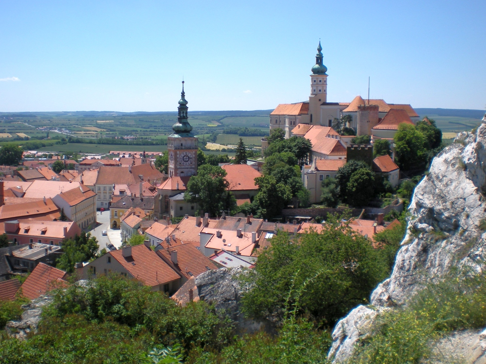
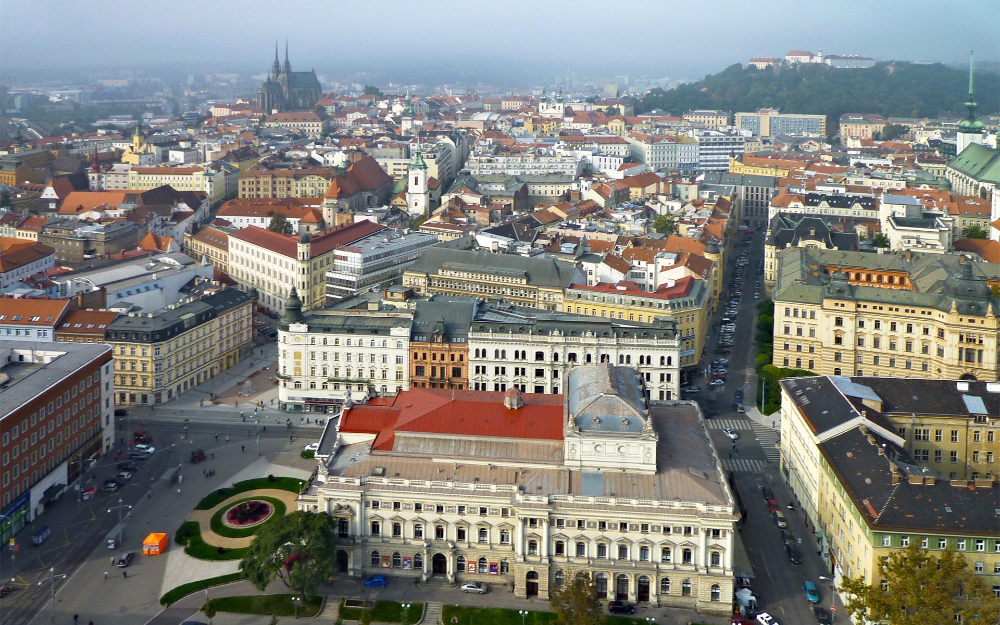

La Región de Moravia Meridional, es una unidad administrativa (kraj) de la República Checa. Se sitúa en la parte meridional de la región histórica de Moravia. La capital es Brno, la segunda ciudad más poblada del país.
Castillo de Mikulov y centro historico
La región es reconocida internacionalmente por su producción de vino. Desde la adhesión de la República Checa a la Unión Europea en 2004, la región ha experimentado un crecimiento demográfico y un saldo migratorio positivo durante todos los años posteriores consecutivos.
Vista del centro historico de Brno
La capital administrativa de esta región es la ciudad de Brno. Es la segunda ciudad más grande de la República Checa por población y superficie, y la más grande de Moravia. Capital histórica del Margraviato de Moravia, Brno es el centro administrativo de la Región de Moravia Meridional en la que forma un distrito separado (Distrito de Brno-město).